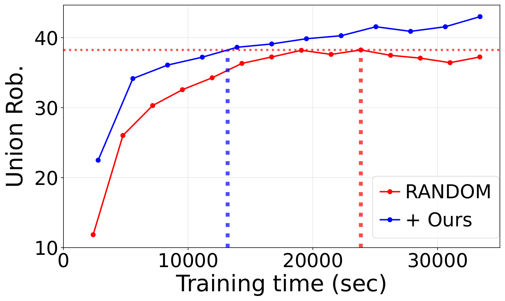

Results
We evaluate on CIFAR-10, ImageNet-100 and ImageNet-1K with ViT-B, DeiT-B, Swin-B, WideResNet and XCiT
backbones under AutoAttack. RoME is modular and plugs into existing MAT methods.
Robustness against multiple ℓp perturbations
Natural accuracy, single-threat robustness, their average, and worst-case union robustness under AutoAttack.
Comparison with state-of-the-art MAT methods on CIFAR-10 and ImageNet-100 under AutoAttack.
RoME achieves the best average and union robustness in every setting, and also the highest natural accuracy
— because natural images get their own model pathway rather than being forced into a single
representation space. Best results in bold.
Robustness against unseen threats
Common corruptions, ℓ0, perceptual, patch, spatial and semantic attacks — none seen
during training — plus GMA, a white-box adaptive attack that explicitly tries to misroute the gating.
Unseen threats on CIFAR-10. The diverse representations learned across multiple pathways
generalize beyond the ℓp threats seen during training. RoME also holds up under GMA, the
adaptive attack targeting the gating itself, and improves non-ℓp perceptual adversarial
training (PAT, VR) by up to +6.8 %p on StAdv.
Learned expert routing
Applying different ℓp threats to different regions of an image and visualizing the resulting
per-patch expert activations.
Standard MoE (rows 1, 3) routes every threat to the same experts. RoME (rows 2, 4) activates different experts
per threat — Expert 1 fires strongly for ℓ∞ and barely at all for
ℓ1, confirming that each expert specializes in a distinct threat type.
Computational cost
Measured on ViT-B / CIFAR-10 against the RANDOM baseline.

Training time vs. union robustness
MoE with FFN experts and MORE cost 3× and 4× more parameters. RoME reaches state-of-the-art union
robustness with only 1.04× parameters and 1.17× train time, and outperforms the
baseline at every wall-clock budget — reaching RANDOM's peak robustness in 13.2k sec versus 23.9k sec.